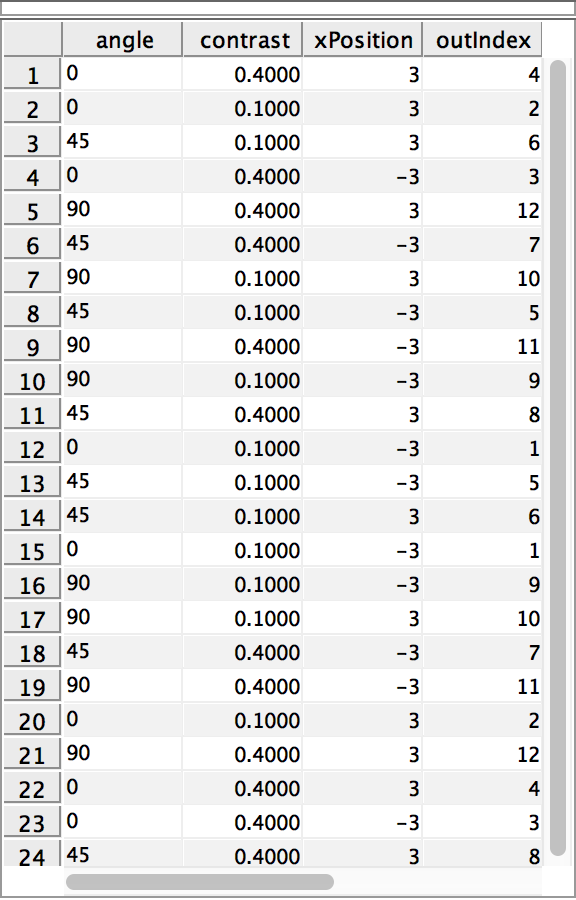
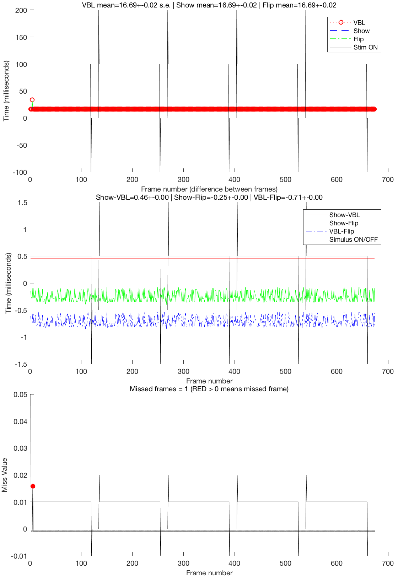

Demonstration of a command-driven setup of an Opticka Experiment.
Opticka is an object oriented framework/GUI for the Psychophysics toolbox, allowing randomised interleaved presentation of parameter varying stimuli specified in experimenter-relevant values. It is designed to work on OS X, Windows (currently no digital I/O) or Linux, and can interface via strobed words (using a cheap and very reliable LabJack) and ethernet with external harware for recording neurophysiological data. In this example, Stimulus objects (myStim class cell array), stimulus sequence variables (myTask object), and screenManager (myScreen object) are passed to the runExperiment object for final display. Opticka also has a UI (type opticka in the command window), which is a visual manager of the objects introduced here. The UI also controls other functions such as calibration, protocol loading/saving and communication with neurophysiological equipment via LabJack and ethernet. There is also an independent receptive field mapper (rfMapper) that uses mouse control to probe receptive fields and generate drawn hand maps.
The source of this file can be found at: https://github.com/iandol/opticka/blob/master/optickatest.m
Contents
Initial clear up of previous runs
Make sure we start in a clean environment, not essential
clear myStim myTask myScreen rExp sca %PTB screen clear all
PTB-INFO: Connection to Psychtoolbox kernel support driver instance #0 (Revision 1) established.
PTB-INFO: Connection to Psychtoolbox kernel support driver instance #1 (Revision 1) established.
PTB-INFO: Disconnecting from kernel driver instance #1 for detected Intel GPU for safety reasons. setenv('PSYCH_ALLOW_DANGEROUS', '1') to override.
Stimulus Initialisation
These set up the 10 different stimuli. Please note that values are in degrees, cycles/deg, deg/s etc. Colour is repestend using floating point values from 0 - 1 and all objects accept an opacity (alpha) value. Each stimulus is a class object with a series of properties ('sf', 'colour' etc.) that you can set up by simply passing property name : value pairs into the stimulus class. You can also pass these in as a structure if you prefer. If you do not pass any properties, default values will be used without problems.
First we create a stimulus manager that collects and handles groups of stimuli as if they were a single 'thing', so for example when you use the draw method on a stimulus manager, it tells each of its child stimuli to draw in turn
myStim = metaStimulus();
The first six stimuli are gratings / gabors of varying kinds.
myStim{1}=gratingStimulus('sf',1,'contrast',0.5,'size',1,'tf',0,'angle',30,...
'gabor', 0, 'mask', 1);
myStim{2}=gratingStimulus('sf',3,'contrast',0.5,'tf',1,'size',3,'xPosition',-3,...
'yPosition',-4,'gabor',1,'mask',0);
myStim{3}=gratingStimulus('sf',1,'contrast',0.5,'size',3,'angle',45,'xPosition',-2,...
'yPosition',2,'gabor',0,'mask',1,'speed',2);
myStim{4}=gratingStimulus('sf',1,'contrast',0.5,'tf',0,'size',2,'xPosition',-3,...
'yPosition',-3,'gabor',0,'mask',1,'speed',2);
myStim{5}=gratingStimulus('sf',1,'contrast',0.25,'colour',[0.6 0.3 0.3],'tf',0.1,...
'size',2,'xPosition',3,'yPosition',0,'gabor',0,'mask',0);
myStim{6}=gratingStimulus('sf',1,'contrast',0.5,'colour',[0.4 0.4 0.6],'tf',1,...
'driftDirection',-1,'size',2,'xPosition',4,'yPosition',-4,'gabor',0,'mask',1);
A simple bar: bars can be solid in colour or have random texture (try setting 'type' to 'random'). This is an opaque solid yellow bar moving at 4deg/s. Notice the startPosition is -4; this means start -4 degrees "behind" start X and Y position, as the stimulus is displayed for 2 seconds the bar therefore traverses 4degrees behind then 4 degrees past the X and Y position. Also note as we will change the angle of this stimulus the geometry is calculated for you automatically!
myStim{7}=barStimulus('type','solid','barWidth',1,'barLength',4,'speed',4,'xPosition',0,...
'yPosition',0,'startPosition',-4,'colour',[.7 .7 .7]);
coherent dot stimulus; 200 dots moving at 1deg/s with coherence set to 0.5
myStim{8}=dotsStimulus('density',50,'speed',1,'coherence',0.5,'xPosition',4,...
'yPosition',6,'colour',[1 1 1],'dotSize',0.1,'colorType','randomBW');
a simple circular spot, spots can also flash if needed
myStim{9}=spotStimulus('speed',2,'xPosition',4,'type','flash',...
'yPosition',4,'colour',[1 1 0],'size',1,'flashTime',[0.2 0.2]);
a texture stimulus, by default this loads a picture from the opticka stimulus directory; you can rotate it, scale it etc and drift it across screen as in this case
myStim{10}=textureStimulus('speed',2,'xPosition',-6,...
'yPosition',6,'size',0.5);
Task Initialisation
The stimulusSequence class defines a stimulus sequence (task) which is composed of randomised stimulus parameter changes (called variables) repeated over a set of blocks. A trial is an individual stimulus presentation. This example has three different variables changing over 3*2*2 values (12 unique trials) which is then repeated over 2 blocks for 24 trials in total
myTask = stimulusSequence; %new stimulusSequence object instance myTask.nBlocks = 2; %number of blocks myTask.trialTime = 2; %time of stimulus display: 2 seconds myTask.isTime = 0.25; %inter trial time: 0.25 seconds myTask.ibTime=1; %inter block time: 1 second
Variable 1
Our first variable is angle, applied to stimulus 1 3 7 and 10, randomly selected from values of 0 45 and 90 degrees
myTask.nVar(1).name = 'angle';
myTask.nVar(1).stimulus = [1 3 7 10];
myTask.nVar(1).values = [0 45 90];
Variable 2
Our second variable is contrast, applied to stimulus 2 and 3, randomly selected from values of 0.025 and 0.1
myTask.nVar(2).name = 'contrast';
myTask.nVar(2).stimulus = [2 3];
myTask.nVar(2).values = [0.1 0.4];
Variable 3
Our third variable is X position, applied to stimulus 2 and 8, randomly selected from values of -3 and 3 degrees from visual center of screen
myTask.nVar(3).name = 'xPosition'; myTask.nVar(3).stimulus = [2 8]; myTask.nVar(3).values = [-3 3]; % the next two parameters allow us to link a stimulus with % an offset; for example you could set stimulus 1 to values [1 2 3] % and if offsetvalue was 2 and offsetstimulus was 2 then the second % stimulus would change through [3 4 5]; in this case we offset stimulus 10 % to +1 the values above i.e. [-2 4] myTask.nVar(3).offsetstimulus = [10]; myTask.nVar(3).offsetvalue = [1];
Randomisation
We call the method to randomise the trials in a block structure
randomiseStimuli(myTask);
Visual Trial List
Lets print out a log of the stimulus properties for every trial
showLog(myTask);
Setup screenManager Object
we initialise the object with parameter options to open the PTB screen with. Note distance and pixels per cm define the resultant geometry > pixel mappings. You can set several screen parameters, windowing, blending etc. hideFlash uses a trick from Mario to set the CLUT to the task background colour so you don't see the black flash on PTB screen initialisation.
myScreen = screenManager('distance', 57.3,... %display distance from observer 'pixelsPerCm', 44,... %calibration value for screen size/pixel density 'blend', true,... %enable OpenGL blending, you can also set blend modes when needed 'windowed', false,... %set to a widthxheight for debugging i.e. [800 600]; set to false for fullscreen 'antiAlias', 0,... %can be set to 4 or 8x oversampling with no dropped frames on OS X ATI 5870 'bitDepth', '8bit',... %try 8bit, FloatingPoint16bit FloatingPoint32bit 'hideFlash', false); %mario's gamma trick
Setup runExperiment Object
We now pass our stimulus screen and sequence objects to the runExperiment class. runExperiment contains the run class that actually runs the task.
rExp = runExperiment('stimuli', myStim,... %stimulus objects 'task', myTask,... %task design object 'screen', myScreen,... %screen manager object 'debug', false,... %setup screen to not complain about sync errors etc. 'verbose', false); %minimal verbosity
run our experiment, to exit early, press the right (OS X) or middle (Win/Linux) mouse button
run(rExp);
---> labJack: labJack running in silent mode... | CONSTRUCTOR Method
---> screenManager: ConserveVRAM set at 65536
---> screenManager: Sync Tests enabled.
PTB-INFO: Retina display. Enabling panel fitter for scaled Retina compatibility mode.
PTB-INFO: This is Psychtoolbox-3 for Apple OS X, under Matlab 64-Bit (Version 3.0.12 - Build date: Feb 19 2016).
PTB-INFO: Support status on this operating system release: OSX 10.11 Supported.
PTB-INFO: Type 'PsychtoolboxVersion' for more detailed version information.
PTB-INFO: Most parts of the Psychtoolbox distribution are licensed to you under terms of the MIT License, with
PTB-INFO: some restrictions. See file 'License.txt' in the Psychtoolbox root folder for the exact licensing conditions.
PTB-INFO: Always using Cocoa for fullscreen windows to work around graphics driver bugs in OSX.
PTB-INFO: Presentation timing precision is not yet known for this configuration on most machines. Check your results.
PTB-INFO: Using GLEW version 1.11.0 for automatic detection of OpenGL extensions...
PTB-INFO: Will use fragile CoreVideo timestamping as fallback if beamposition timestamping doesn't work.
PTB-INFO: CVDisplayLink for screen 0 created to work around the brokenness of Apple Mac OS/X 10.7 and later:
PTB-INFO: Video refresh interval as measured by CoreVideo display link: 16.669370 msecs.
PTB-INFO: Video display output delay as reported by CoreVideo display link: nan msecs.
OpenGL-Vendor / renderer / version are: ATI Technologies Inc. - AMD Radeon R9 M370X OpenGL Engine - 2.1 ATI-1.42.6
OpenGL-Extensions are: GL_ARB_color_buffer_float GL_ARB_depth_buffer_float GL_ARB_depth_clamp GL_ARB_depth_texture GL_ARB_draw_buffers GL_ARB_draw_elements_base_vertex GL_ARB_draw_instanced GL_ARB_fragment_program GL_ARB_fragment_program_shadow GL_ARB_fragment_shader GL_ARB_framebuffer_object GL_ARB_framebuffer_sRGB GL_ARB_half_float_pixel GL_ARB_half_float_vertex GL_ARB_imaging GL_ARB_instanced_arrays GL_ARB_multisample GL_ARB_multitexture GL_ARB_occlusion_query GL_ARB_pixel_buffer_object GL_ARB_point_parameters GL_ARB_point_sprite GL_ARB_provoking_vertex GL_ARB_seamless_cube_map GL_ARB_shader_objects GL_ARB_shader_texture_lod GL_ARB_shading_language_100 GL_ARB_shadow GL_ARB_shadow_ambient GL_ARB_sync GL_ARB_texture_border_clamp GL_ARB_texture_compression GL_ARB_texture_compression_rgtc GL_ARB_texture_cube_map GL_ARB_texture_env_add GL_ARB_texture_env_combine GL_ARB_texture_env_crossbar GL_ARB_texture_env_dot3 GL_ARB_texture_float GL_ARB_texture_mirrored_repeat GL_ARB_texture_non_power_of_two GL_ARB_texture_rectangle GL_ARB_texture_rg GL_ARB_transpose_matrix GL_ARB_vertex_array_bgra GL_ARB_vertex_blend GL_ARB_vertex_buffer_object GL_ARB_vertex_program GL_ARB_vertex_shader GL_ARB_window_pos GL_EXT_abgr GL_EXT_bgra GL_EXT_bindable_uniform GL_EXT_blend_color GL_EXT_blend_equation_separate GL_EXT_blend_func_separate GL_EXT_blend_minmax GL_EXT_blend_subtract GL_EXT_clip_volume_hint GL_EXT_debug_label GL_EXT_debug_marker GL_EXT_depth_bounds_test GL_EXT_draw_buffers2 GL_EXT_draw_range_elements GL_EXT_fog_coord GL_EXT_framebuffer_blit GL_EXT_framebuffer_multisample GL_EXT_framebuffer_object GL_EXT_framebuffer_sRGB GL_EXT_geometry_shader4 GL_EXT_gpu_program_parameters GL_EXT_gpu_shader4 GL_EXT_multi_draw_arrays GL_EXT_packed_depth_stencil GL_EXT_packed_float GL_EXT_provoking_vertex GL_EXT_rescale_normal GL_EXT_secondary_color GL_EXT_separate_specular_color GL_EXT_shadow_funcs GL_EXT_stencil_two_side GL_EXT_stencil_wrap GL_EXT_texture_array GL_EXT_texture_compression_dxt1 GL_EXT_texture_compression_s3tc GL_EXT_texture_env_add GL_EXT_texture_filter_anisotropic GL_EXT_texture_integer GL_EXT_texture_lod_bias GL_EXT_texture_mirror_clamp GL_EXT_texture_rectangle GL_EXT_texture_shared_exponent GL_EXT_texture_sRGB GL_EXT_texture_sRGB_decode GL_EXT_timer_query GL_EXT_transform_feedback GL_EXT_vertex_array_bgra GL_APPLE_aux_depth_stencil GL_APPLE_client_storage GL_APPLE_element_array GL_APPLE_fence GL_APPLE_float_pixels GL_APPLE_flush_buffer_range GL_APPLE_flush_render GL_APPLE_object_purgeable GL_APPLE_packed_pixels GL_APPLE_pixel_buffer GL_APPLE_rgb_422 GL_APPLE_row_bytes GL_APPLE_specular_vector GL_APPLE_texture_range GL_APPLE_transform_hint GL_APPLE_vertex_array_object GL_APPLE_vertex_array_range GL_APPLE_vertex_point_size GL_APPLE_vertex_program_evaluators GL_APPLE_ycbcr_422 GL_ATI_blend_equation_separate GL_ATI_blend_weighted_minmax GL_ATI_separate_stencil GL_ATI_texture_compression_3dc GL_ATI_texture_env_combine3 GL_ATI_texture_float GL_ATI_texture_mirror_once GL_IBM_rasterpos_clip GL_NV_blend_square GL_NV_conditional_render GL_NV_depth_clamp GL_NV_fog_distance GL_NV_light_max_exponent GL_NV_texgen_reflection GL_NV_texture_barrier GL_SGI_color_matrix GL_SGIS_generate_mipmap GL_SGIS_texture_edge_clamp GL_SGIS_texture_lod
PTB-INFO: OpenGL-Renderer is ATI Technologies Inc. :: AMD Radeon R9 M370X OpenGL Engine :: 2.1 ATI-1.42.6
PTB-INFO: Renderer has 2048 MB of VRAM and a maximum 1928 MB of texture memory.
PTB-INFO: VBL startline = 1800 , VBL Endline = 1850
PTB-INFO: Measured monitor refresh interval from beamposition = 16.668757 ms [59.992475 Hz].
PTB-INFO: Will use beamposition query for accurate Flip time stamping.
PTB-INFO: Measured monitor refresh interval from VBLsync = 16.668219 ms [59.994412 Hz]. (50 valid samples taken, stddev=0.072151 ms.)
PTB-INFO: Small deviations between reported values are normal and no reason to worry.
PTB-INFO: Using OpenGL GL_TEXTURE_RECTANGLE_EXT extension for efficient high-performance texture mapping...
PTB-INFO: Trying to enable my builtin panel-fitter on user request.
PTB-INFO: Psychtoolbox imaging pipeline starting up for window with requested imagingmode 33793 ...
PTB-INFO: Will use 8 bits per color component framebuffer for stimulus drawing.
PTB-INFO: Enabling panel fitter. Providing virtual framebuffer of 1440 x 900 pixels size.
PTB-INFO: Will use 8 bits per color component framebuffer for stimulus post-processing (if any).
PTB-INFO: Disabled color clamping via hardware.
PTB-INFO: ReadNormalizedGammatable: screenid 0 mapped to CGDisplayId 0x4280b82.
PTB-INFO: ReadNormalizedGammatable: numEntries = 1024.
PTB-INFO: LoadNormalizedGammatable: screenid 0 mapped to CGDisplayId 0x4280b82.
---> screenManager: Initial OpenGL blending set to GL_ONE | GL_ZERO
PTB-INFO: ReadNormalizedGammatable: screenid 0 mapped to CGDisplayId 0x4280b82.
PTB-INFO: ReadNormalizedGammatable: numEntries = 1024.
Building a vertex shader:Reading shader from file /Users/ian/Code/Psychtoolbox-3/Psychtoolbox/PsychOpenGL/PsychGLSLShaders/BasicSineGratingShader.vert.txt ...
Building a fragment shader:Reading shader from file /Users/ian/Code/Psychtoolbox-3/Psychtoolbox/PsychOpenGL/PsychGLSLShaders/ApertureSineGratingShader.frag.txt ...
PTB-INFO: GLSL fragment filtershader created for high quality texture filtering in high-precision unclamped color mode
PTB-INFO: ReadNormalizedGammatable: screenid 0 mapped to CGDisplayId 0x4280b82.
PTB-INFO: ReadNormalizedGammatable: numEntries = 1024.
Compiling all shaders matching BasicSineGratingShader * into a GLSL program.
Building a fragment shader:Reading shader from file /Users/ian/Code/Psychtoolbox-3/Psychtoolbox/PsychOpenGL/PsychGLSLShaders/BasicSineGratingShader.frag.txt ...
Building a vertex shader:Reading shader from file /Users/ian/Code/Psychtoolbox-3/Psychtoolbox/PsychOpenGL/PsychGLSLShaders/BasicSineGratingShader.vert.txt ...
PTB-INFO: ReadNormalizedGammatable: screenid 0 mapped to CGDisplayId 0x4280b82.
PTB-INFO: ReadNormalizedGammatable: numEntries = 1024.
Building a vertex shader:Reading shader from file /Users/ian/Code/Psychtoolbox-3/Psychtoolbox/PsychOpenGL/PsychGLSLShaders/BasicSineGratingShader.vert.txt ...
Building a fragment shader:Reading shader from file /Users/ian/Code/Psychtoolbox-3/Psychtoolbox/PsychOpenGL/PsychGLSLShaders/ApertureSineGratingShader.frag.txt ...
PTB-INFO: ReadNormalizedGammatable: screenid 0 mapped to CGDisplayId 0x4280b82.
PTB-INFO: ReadNormalizedGammatable: numEntries = 1024.
Building a vertex shader:Reading shader from file /Users/ian/Code/Psychtoolbox-3/Psychtoolbox/PsychOpenGL/PsychGLSLShaders/BasicSineGratingShader.vert.txt ...
Building a fragment shader:Reading shader from file /Users/ian/Code/Psychtoolbox-3/Psychtoolbox/PsychOpenGL/PsychGLSLShaders/ApertureSineGratingShader.frag.txt ...
PTB-INFO: ReadNormalizedGammatable: screenid 0 mapped to CGDisplayId 0x4280b82.
PTB-INFO: ReadNormalizedGammatable: numEntries = 1024.
Compiling all shaders matching BasicSineGratingShader * into a GLSL program.
Building a fragment shader:Reading shader from file /Users/ian/Code/Psychtoolbox-3/Psychtoolbox/PsychOpenGL/PsychGLSLShaders/BasicSineGratingShader.frag.txt ...
Building a vertex shader:Reading shader from file /Users/ian/Code/Psychtoolbox-3/Psychtoolbox/PsychOpenGL/PsychGLSLShaders/BasicSineGratingShader.vert.txt ...
PTB-INFO: ReadNormalizedGammatable: screenid 0 mapped to CGDisplayId 0x4280b82.
PTB-INFO: ReadNormalizedGammatable: numEntries = 1024.
Building a vertex shader:Reading shader from file /Users/ian/Code/Psychtoolbox-3/Psychtoolbox/PsychOpenGL/PsychGLSLShaders/BasicSineGratingShader.vert.txt ...
Building a fragment shader:Reading shader from file /Users/ian/Code/Psychtoolbox-3/Psychtoolbox/PsychOpenGL/PsychGLSLShaders/ApertureSineGratingShader.frag.txt ...
PTB-INFO: ReadNormalizedGammatable: screenid 0 mapped to CGDisplayId 0x4280b82.
PTB-INFO: ReadNormalizedGammatable: numEntries = 1024.
PTB-INFO: ReadNormalizedGammatable: screenid 0 mapped to CGDisplayId 0x4280b82.
PTB-INFO: ReadNormalizedGammatable: numEntries = 1024.
PTB-INFO: ReadNormalizedGammatable: screenid 0 mapped to CGDisplayId 0x4280b82.
PTB-INFO: ReadNormalizedGammatable: numEntries = 1024.
---> screenManager: RESET GAMMA TABLES
PTB-INFO: ReadNormalizedGammatable: screenid 0 mapped to CGDisplayId 0x4280b82.
PTB-INFO: ReadNormalizedGammatable: numEntries = 1024.
PTB-INFO: LoadNormalizedGammatable: screenid 0 mapped to CGDisplayId 0x4280b82.
PTB-INFO: Releasing CVDisplayLink for screen 0.
INFO: PTB's Screen('Flip', 10) command seems to have missed the requested stimulus presentation deadline
INFO: a total of 3 times out of a total of 740 flips during this session.
INFO: This number is fairly accurate (and indicative of real timing problems in your own code or your system)
INFO: if you provided requested stimulus onset times with the 'when' argument of Screen('Flip', window [, when]);
INFO: If you called Screen('Flip', window); without the 'when' argument, this count is more of a ''mild'' indicator
INFO: of timing behaviour than a hard reliable measurement. Large numbers may indicate problems and should at least
INFO: deserve your closer attention. Cfe. 'help SyncTrouble', the FAQ section at www.psychtoolbox.org and the
INFO: examples in the PDF presentation in PsychDocumentation/Psychtoolbox3-Slides.pdf for more info and timing tips.
!!!>>> >>> >>> There were 1 MISSED FRAMES <<< <<< <<<!!!
Plot a timing log of every frame against the stimulus on/off times:
getRunLog(rExp);
The image above is a graphical timing plot of every frame and whether any frames were dropped during stimulus presentation. This will not consider dropped frames during the GPU warming or inter trial time as dropped as the display is blank and we are using absolute time values for our trial transitions. Opticka actually resets and updates the stimulus objects on the second and subsequent frames of the inter trial blank, this forces any computation of stimulus parameter to when it doesn't matter; but note for complex stimuli a frame or two may be dropped during the blank and so ensure you set the inter trial time > than the dropped frame delay!